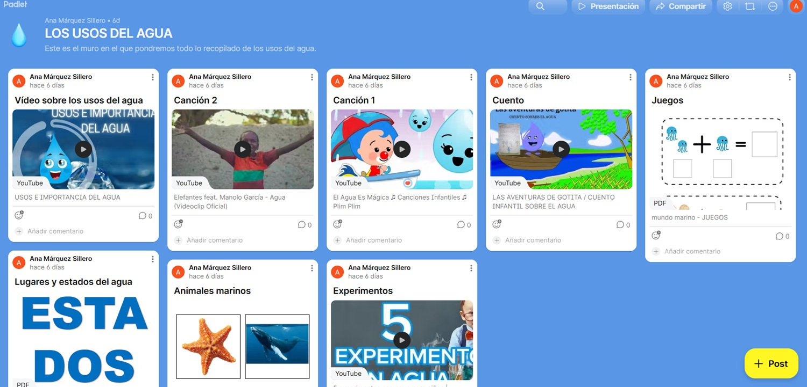

PADLET Y WAKELET
En este apartado se incluyen las herramientas de curación de contenidos que han sido utilizadas para la recopilación de recuros. Han sido dos herramientas las que se han utilizado: por un lado tenemos Padlet, la cual ha sido la elegida para el alumnado. Por otro lado tenemos Wakelet, diseñada para el o la docente.
- Padlet: herramienta utilizada para la recopilación de recursos para el alumnado sobre “Los usos del agua”. En esta recopilación se incluye:
- Vídeo educativo sobre los usos del agua.
- Canciones infantiles relacionadas con el agua.
- Enlace a cuento.
- Juegos.
- Imágenes.
- Vídeo de experimentos sencillos.
Enlace público: Padlet “Los usos del agua”.

- Wakelet: en esta recopilación se incluyen herramientas y aplicaciones que utilizo habitualmente en mi práctica docente, como:
- Canva for Education para crear materiales visuales.
- Book Creator para cuentos y portfolios digitales.
- YouTube Kids para vídeos educativos adaptados.
- Bancos de recursos y páginas educativas para Infantil.
Enlace público: Wakelet “Herramientas digitales”.